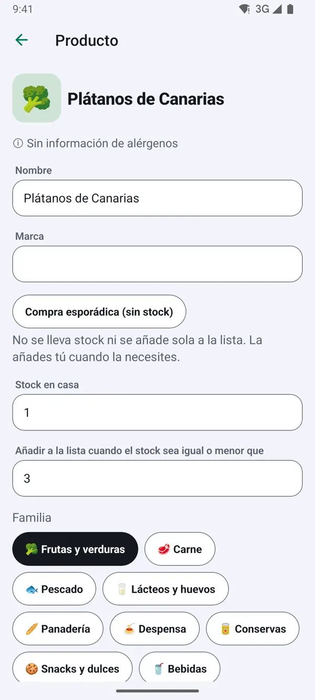
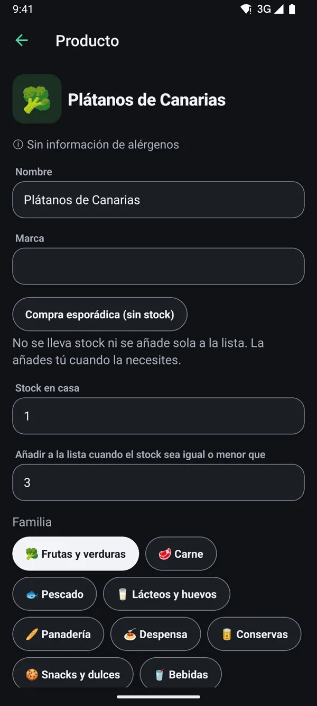

¿Cuándo se añade un producto a la lista de la compra?
Actualizado el 19 de noviembre de 2026
Un producto entra solo en la lista de la compra cuando lo que queda en casa es igual o menor que su mínimo. Si el mínimo de la leche es 2 y tenías 3, al gastar un brick entra en la lista de todos los móviles de la casa.
1La regla: stock igual o menor que el mínimo
Cada producto tiene dos números en su ficha:
- Stock en casa: lo que queda.
- Añadir a la lista cuando el stock sea igual o menor que: el mínimo.
La app lo comprueba cada vez que cambia el stock: al escanear al consumir, al pulsar − o + en la despensa, al editar la ficha y al terminar la compra. Al escanear verás el aviso «añadido a la lista de la compra».
Truco: con mínimo 0, el producto entra en la lista cuando se acaba del todo.


2Cuántas unidades pone
Por defecto, las que faltan para pasar del mínimo. Con mínimo 2 y 1 en casa, pone 2: así, al comprarlas, vuelves a estar por encima.
- Si siempre compras lo mismo (un pack de 6, por ejemplo), escríbelo en Unidades a comprar y pondrá siempre esas.
Stock en casa
Al ritmo actual te dura unos 5 días.
Unidades a comprar
Automático
Añadir a la lista cuando el stock sea igual o menor que
1
Mínimo sugerido según lo que gastáis: 2
3Cuándo sale de la lista
- Al comprarlo: lo marcas en el carro y pulsas Terminar compra. El stock sube y sale de la lista.
- Si el stock vuelve a pasar del mínimo sin comprarlo (por ejemplo, pulsas + porque había otro en el armario), sale solo.
Truco: cómo se hace la compra paso a paso: Hacer la compra por supermercado.


4Añadir o quitar algo a mano
No hace falta esperar al mínimo:
- En la ficha del producto, pulsa Añadir a la lista de la compra. Para quitarlo, Quitar de la lista de la compra.
Lo que añades a mano se queda en la lista aunque tengas stock, hasta que lo compras o lo quitas.
En la lista de la compra: 2
Escanea el envase. Si ya tienes ese producto con su código, podrás juntar los dos.
Para tener varias marcas bajo un mismo producto, como pan de molde Bimbo y Hacendado.
5Lo que nunca entra solo
- Compras esporádicas: los productos marcados como «Compra esporádica (sin stock)» no llevan stock, así que solo van a la lista cuando los añades tú, con «A la lista» en la despensa.
- Productos archivados: no salen en la despensa ni en la lista hasta que los restauras.
En la pestaña Compra también verás «Se acabará pronto»: productos que, al ritmo que los gastáis, duran una semana o menos aunque aún no hayan llegado al mínimo. Es solo un aviso: no se añaden solos.
TuDespensa es gratis y sin anuncios.
Llegará primero a Android y, más adelante, a iPhone. Las capturas son de la app con una casa de ejemplo.
Más guías
Escanear productos para que la despensa baje sola
El escaneo al gastar y el stock mínimo, paso a paso.
Compartir la despensa con tu familia
El código de la casa y cómo entra cada móvil.
Hacer la compra por supermercado
La lista por súper, el carro y terminar la compra.
Reponer la despensa con una foto del ticket 
De la foto del ticket a la despensa repuesta.
Qué incluye TuDespensa Pro y cuánto cuesta
Qué hace Pro, su precio, la prueba gratis y los tickets al mes.
Revisar el ticket antes de reponer
Dudas, productos nuevos y unidades, antes de confirmar.
Hacer una buena foto del ticket
Ticket entero, plano y con luz, o mejor el PDF.
Añadir una foto a un producto
Hacer la foto o elegirla de la galería, en la ficha del producto.
Poner el código de barras a un producto
Productos sin código y los escaneados en el súper que quedan pendientes.
Juntar dos productos en uno
Productos repetidos o dos marcas de lo mismo, en uno solo.
El stock mínimo y cómo ajustarlo
Elegir el mínimo, cambiarlo y usar el que sugiere la app.
Cómo organizar la despensa de casa
Familias, stock mínimo y un sistema que no dependa de la memoria de nadie.
Lista de la compra compartida en familia
Cómo dejar de comprar dos veces lo mismo y de olvidar lo que falta.